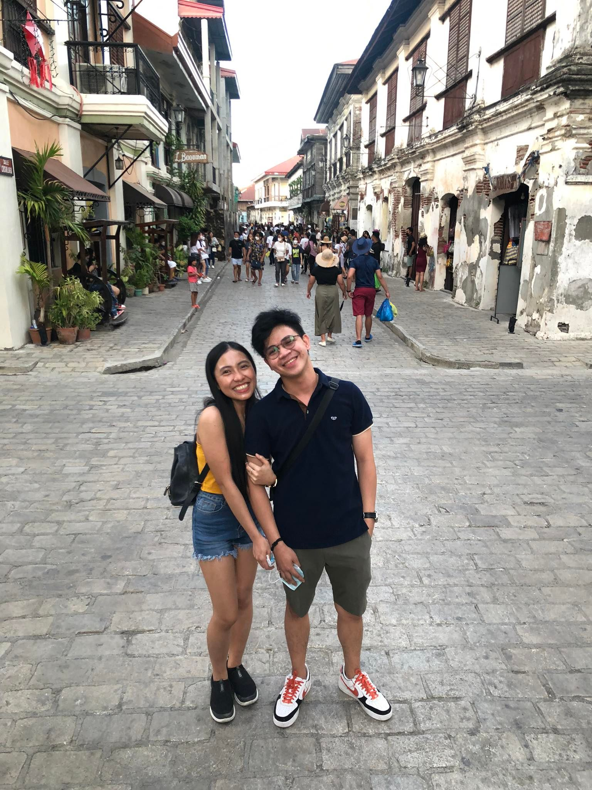

Trishia Mae 💜



HI BB, Babi, Happy Anniversary!!!! Thank you for all your care and love, I can't express my feelings right now while typing this letter it's already 12:34 in the midnight and still doing this website just to surprise you. Thank you for not giving up even though it's your fault sometimes(Just kidding). Thank you for not giving up in every arguments we had. Thank you for showing how much you love me . This is my first time doing this kind of effort, I don't have any idea how to surprise you because you don't want materials to receive, So I'll just use my knowledge in IT to do this a little bit surprise. I did this surprise because if you miss me you can just browse and type this website to see our pictures and my message to you. Hoping for the best of us, let's pray together that we will stay longer and stronger. You're my everything, Every love story is special and beautiful but ours is my favorite! I just want you to know even though I'm busy sometimes doing my things, just always remember that every second every minute every hour I always miss you! I don't know how I got so lucky to have you, maybe it's God's plan to meet us and to get love each other forever.This time I want to say sorry to you for hurting you emotionally sometimes if we argue, I know you'll understand what I'm feeling everytime we fight. But always remember that I will always always always love you, even though we're talking trash!(badwrdsExpressions). In every relationship arguing is normal without that , it will be boring hahaha! So kung inaaway kita ibig sabihin nun minamahal kita, Everytime na nag aaway tayo dun tayo mas lumalakas tandaan mo yan! Okay I know my message is short again nahihirapan nako mag english e sana nag aral ako ng major ng english hahaha joke. Again. Happy Happy Anniversary bbko. Singsingpet ka wen? Praying that you'll be my very very last girl in my life. I LOVE YOU SO MUCH! Enjoy the day!!